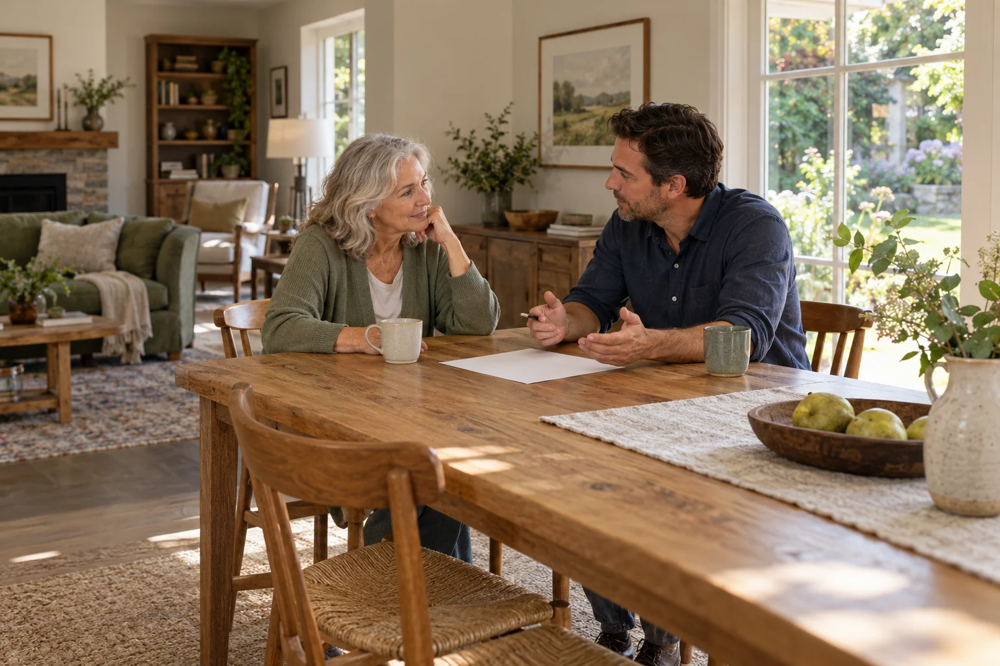
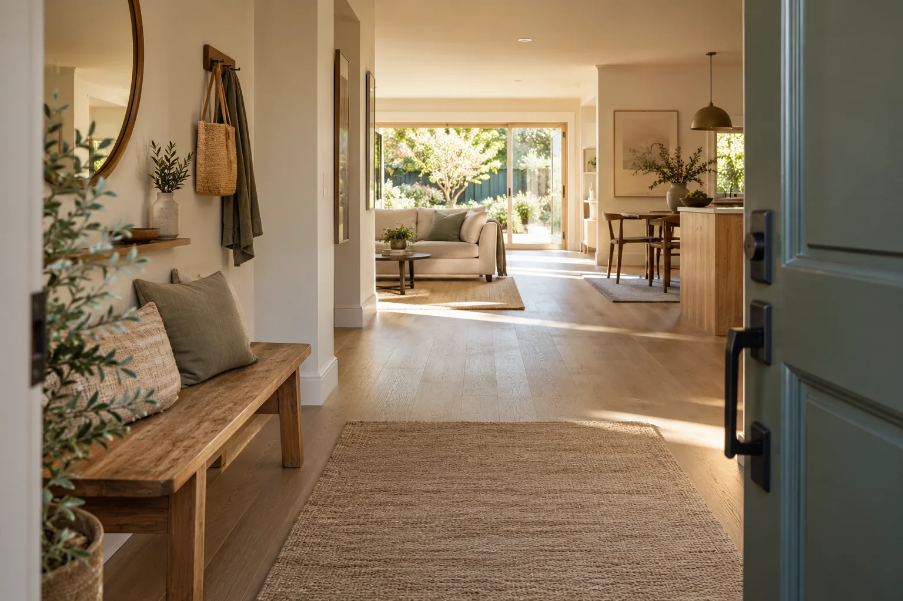
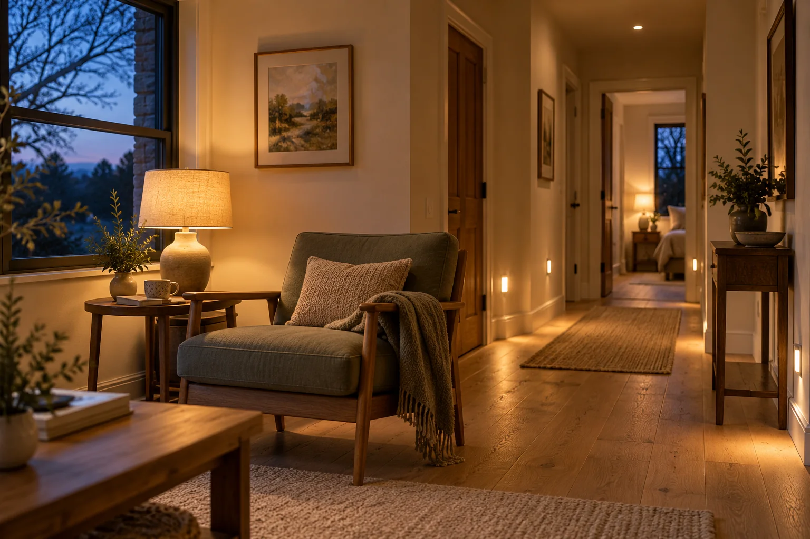

Make room for everyone’s voice.
Start with the person who lives there. Make space for preferences, shared concerns, and the things that make the home feel like theirs.
Home-adaptation planning concept
A familiar home. A changing life.
Thoughtful possibilities for both.
Service concept in development.
Planning conversations, before building decisions.

Home is personal.
The chair by the window. The way in from the garden. The room where everyone ends up. Begin with what you want to keep, and the ordinary moments you would like to make easier.

The welcome matters.
Think about arriving with groceries, finding your keys, or taking a moment at the door. A useful planning conversation starts with the way you actually live.
Add an arrival noteThe details of an ordinary day
People, preferences, and familiar routines belong at the center of a conversation about home.

Start with the person who lives there. Make space for preferences, shared concerns, and the things that make the home feel like theirs.

Notice the route from a favorite chair, the light at the end of the hall, and the routines that continue after sunset.
The proposed planning brief
Pilot scope, local availability, and fees remain in development.
Bring the household’s questions together before deciding what to change.
Everstead’s proposed service would organize everyday concerns into a practical brief to discuss with independently engaged home professionals.
This is a planning concept. Clinical assessment, technical design, code review, and construction belong with appropriately qualified professionals.
Begin with your own home
Choose the rooms or routines you would like to discuss. Create a note, put it in your own words, and decide whether to share it.
Choose one room, or start with a general question.
For homeowners, families, and home specialists. Initial interest does not confirm an appointment.
A few useful answers
A routine and room map, a staged priority list, and questions to take to independently engaged home professionals.
No. The planning concept organizes household needs. Clinical assessment, technical design, code review and construction require appropriately qualified professionals.
Appointments and a vetted referral service are not live. Pilot availability, responsibilities and any referral relationships would need to be agreed and disclosed separately.